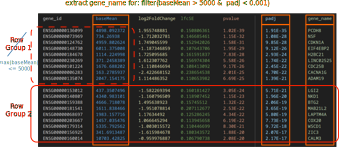

Working with large data could be common but what means large? To me, it means when it does not work anymore on my laptop. The first answer to this problem could be to move the computation to HPC.
That is a classic complain about : everything is loaded in memory. However modern data storage formats and analysis frameworks allow to overcome this limitation.
What are the main actors?
For the data storage format, we will see the parquet format which is column-oriented but with row groups. Also the {fst} is a fast, easy and flexible way to serialize data frames.

For the analysis frameworks, two tools are converging in the syntax of {dplyr} but based on very different infrastructures: polars and DuckDB resulting respectively in {tidypolars} and {duckplyr}.


Storing data efficiently
Most of files we are using are text files, where data consists of observations on each line and column are separated by any kind of delimiters. Those are called flat files1.
First line can be the header, sometimes comments are lines that start with # or % everything can happen, and one needs to actually look at the file beginning to have an idea about the delimiter, comments and header2.
Unstructured files
Below is an example of a tab-separated values (.tsv) with a header. The different columns are color-coded in VSCode but the actual file isn’t.
{kind=link}
People might be more familiar with .csv where the delimiter is not a \t but a comma. However, it is harder to see the different columns with a naked eye, decimals in Europe is a big problem and text field of sentences for example cannot contain actual commas. For all those reasons, I think TAB despite the unstructured way is the best delimiter.
The main problems of those files are:
- Data types unknown
- Slow parsing
- Row-oriented (full file needed)
- Delimiters of all kinds
- Madness of
.csvwith;(often to be read with*_csv2()functions) - Metadata absent or as comments
#/%
Semi-structured
JSON files, thanks to their nested name/value pairs present some improvements to the previous files.
Here is the file renv.lock that records project packages.
The improvements are:
- Data types can be encoded
- So we can validate entries
- Machines can parse easier variable/values
- Human can still have a glance
Still those files are very long, and not optimized for large data.
The Parquet format
In order to be really efficient for machines to read and process fast large data, a farewell to human-readable text files is mandatory. Hence, the machines must not spend time guessing the data types3. The full documentation at Apache is here. Their own introduction is:
Apache Parquet is an open source, column-oriented data file format designed for efficient data storage and retrieval. It provides high performance compression and encoding schemes to handle complex data in bulk and is supported in many programming language and analytics tools.
- Reduce Input/Output operations
- Enable parallelization
- Smart compression
For this, the structure is that data is stored both columnar AND row format using Groups. Having data easily We will exemplified later the effect of the row group, but for column is mainly allows to extract easily only the relevant parts.
For data analysis, we always subset data, usually in memory.
Structured data with informative metadata allows to only load what is needed
Metadata associated. This allows to store schema with data types and a footer with summary statistics (min/max/number) of observations for each row-group. This will efficiently discard some row groups that don’t match predicate.
Compression: for repetitive character elements, an approach like factors in is used. Meaning that are re-encoded as integers with unique values used for a dictionary correspondences (like
levels). Moreover, a Run-Length encoding (RLe) is used to higher compression as depicted below:
Run-length encoding for compression
If one unique value appears several times consecutively, instead of registering an integers this number of times, we compact with this integer and another for the number of repeats.
{kind=link}
Parquet structure
The columnar structure is represented below in orange. Each column has its data type registered in metadata along with some idea about the distribution for numeric data and missing values. This structure is also what {fst} described later has. However, the parquet format also has a structure for rows. They are grouped by a certain number (impact of this parameter later) where the metadata also stored for numeric some summary statistics: minimum, maximum, missing values etc.
Example of rna-seq output file by {DESeq2}
Skip loading useless data
Now let’s imagine from the large table of rna-seq results like above, we want to filter gene names with an adjusted p-values < 0.001 and a basal mean expression > 5000.
The {dplyr} code for this could be:
filter(rna_seq_result, padj < 0.001, baseMean > 5000)Using a parquet file, this means that we need only 3 columns out of 7. Hence, most the data don’t even need to be retrieved from disk. Moreover, since we have predicate for the rows and pre-computed information about each row group, some can be discarded and also not read. This is the case for the Row Group 1 in the example below, since the maximum of baseMean is inferior to 5000 and we want only genes with a baseMean > 5000.

Polars
Polars is a lightning fast Data Frame library written in Rust. Rust is a popular compiled language I started to learn 2 years ago. Even if I did not progress much, I still keep interest, and it was obvious to enjoy seeing a data frame library using Rust.


Polars is supplied as:
- a package
- Javascript
- Python.
With the following promises:
- Fast thanks to Rust itself and parallel execution
- Out of Core API allows you to process without requiring all your data to be in memory
- Intuitive API queries are internally reordered in the most efficient way
- Adheres to a strict schema, the data-types are known in advance thanks to parquet for example
Syntax
This example is from the documentation of the package:
q <- pl$scan_csv("iris.csv")$filter(pl$col("Sepal.Length") > 5)$group_by(
"Species",
.maintain_order = TRUE
)$agg(pl$all()$sum())
# Execute the query plan and collect the result as a Polars DataFrame
df <- q$collect()
df
#> shape: (3, 5)
#> ┌────────────┬──────────────┬─────────────┬──────────────┬─────────────┐
#> │ Species ┆ Sepal.Length ┆ Sepal.Width ┆ Petal.Length ┆ Petal.Width │
#> │ --- ┆ --- ┆ --- ┆ --- ┆ --- │
#> │ str ┆ f64 ┆ f64 ┆ f64 ┆ f64 │
#> ╞════════════╪══════════════╪═════════════╪══════════════╪═════════════╡
#> │ setosa ┆ 116.9 ┆ 81.7 ┆ 33.2 ┆ 6.1 │
#> │ versicolor ┆ 281.9 ┆ 131.8 ┆ 202.9 ┆ 63.3 │
#> │ virginica ┆ 324.5 ┆ 146.2 ┆ 273.1 ┆ 99.6 │
#> └────────────┴──────────────┴─────────────┴──────────────┴─────────────┘Even if it is efficient, the syntax is a bit convoluted for my taste. Hopefully someone, Etienne Bacher, came with a wrapper.
What is data wrangling?
Before looking at Etienne’s work, here is a reminder of what is data wrangling, basics of data analysis. Some key operations on tables are mandatory. Those basics are reminded here by Lise Vaudor:

Main operations on tables
Since 2014, the {dplyr} syntax is intuitive and of the key arguments (with {ggplot2}) for the tidyverse success.
Below we want to remove missing data from the bill measurements of the penguins dataset4. Then we want to compute the ratios of length by depth of bills. Last, we want summary statistics: mean and standard deviation per the Species of those ratios.
The code using the native pipe (|>) that chains operations come with some natural verb (functions)
# 344 penguins with 8 columns
penguins |>
drop_na(starts_with("bill")) |>
mutate(bill_ratio = bill_len / bill_dep) |>
summarise(mratio = mean(bill_ratio),
sdratio = sd(bill_ratio),
.by = species) species mratio sdratio
1 Adelie 2.119726 0.1545937
2 Gentoo 3.175592 0.1708280
3 Chinstrap 2.653756 0.1468944Main operations scheme by Lise Vaudor
{tidypolars}
Polars is great but with the {dplyr} syntax it would be perfect. This is {tidypolars} is achieving thanks to Etienne Bacher. He made a package wrapper around Polars to keep the {dplyr} syntax without any changes. Fallback to materialize data if some functions in polars are not available.

Example with a table of 11,506,035 rows × 15 columns, read as a LazyFrame.
<- "2024-06-28_all_sp_exons.parquet"
scan_parquet_polars(sp_exons)polars LazyFrame
$explain(): Show the optimized query plan.
Naive plan:
Parquet SCAN [2024-06-28_all_sp_exons.parquet]
PROJECT */15 COLUMNSComputing has not happened yet: takes no time, polars returns the plan of operations delaying the actual computation.
See now with some real filtering, select and summarisation, how the plan is modified accordingly but still nothing is computed and it appears instantly.
scan_parquet_polars(sp_exons) |>
filter(Symbol != "SOD2") |>
select(Start, cell, Length, Symbol, contrast, logFC, FDR) |>
summarise(logFC = mean(logFC), .by = c(cell, contrast)) |>
arrange(cell, contrast)SORT BY [col("cell"), col("contrast")]
AGGREGATE
[when([(col("logFC").null_count().cast(Unknown(Float))) > (dyn float: 0.0)]).then(null.cast(Boolean).strict_cast(Float64)).otherwise(col("logFC").mean()).alias("logFC")] BY [col("cell"), col("contrast")] FROM
SELECT [col("Start"), col("cell"), col("Length"), col("Symbol"), col("contrast"), col("logFC"), col("FDR")] FROM
FILTER [(col("Symbol")) != (String(SOD2))] FROM
Parquet SCAN [2024-06-28_all_sp_exons.parquet]
PROJECT */15 COLUMNSComputing with polars
To trigger the computation, one can use either compute() or as_tibble() to materialize the result:
[...] |>
summarise(logFC = mean(logFC),
.by = c(cell, contrast)) |>
arrange(cell, contrast) |>
compute()shape: (15, 3)
┌───────┬─────────────┬───────────┐
│ cell ┆ contrast ┆ logFC │
│ --- ┆ --- ┆ --- │
│ str ┆ str ┆ f64 │
╞═══════╪═════════════╪═══════════╡
│ Hep3B ┆ sp_exon_h2 ┆ 0.000468 │
│ Hep3B ┆ sp_exon_h24 ┆ 0.000475 │
│ Hep3B ┆ sp_exon_h48 ┆ -0.001407 │
│ Hep3B ┆ sp_exon_h6 ┆ -0.000721 │
│ Hep3B ┆ sp_exon_h72 ┆ -0.003017 │
│ … ┆ … ┆ … │
│ HuH7 ┆ sp_exon_h2 ┆ -0.000518 │
│ HuH7 ┆ sp_exon_h24 ┆ -0.000881 │
│ HuH7 ┆ sp_exon_h48 ┆ -0.004082 │
│ HuH7 ┆ sp_exon_h6 ┆ -0.000891 │
│ HuH7 ┆ sp_exon_h72 ┆ -0.002297 │
└───────┴─────────────┴───────────┘This special output with head/tail of DataFrame is directly from polars, data dimension and column types are reported like in tibbles.
Optimized versus naive plan
Since nothing is computing unless you actively asked for him, this delay allows polars to reorganize your queries. The naive plan is yours, and appears just translated in polars code but in the same order.
[...] |>
explain(optimized = FALSE)SORT BY [col("cell"), col("contrast")]
AGGREGATE
[when([(col("logFC").null_count().cast(Unknown(Float))) > (dyn float: 0.0)]).then(null.cast(Boolean).strict_cast(Float64)).otherwise(col("logFC").mean()).alias("logFC")] BY [col("cell"), col("contrast")] FROM
SELECT [col("Start"), col("cell"), col("Length"), col("Symbol"), col("contrast"), col("logFC"), col("FDR")] FROM
FILTER [(col("Symbol")) != (String(SOD2))] FROM
Parquet SCAN [2024-06-28_all_sp_exons.parquet]
PROJECT */15 COLUMNSHowever, you don’t plan things the best way, and some steps can be reordered for efficiency. Actually, this is what polars does by default, and here you can observe it:
[...] |>
explain(optimized = TRUE)SORT BY [col("cell"), col("contrast")]
AGGREGATE
[when([(col("logFC").null_count().cast(Unknown(Float))) > (dyn float: 0.0)]).then(null.cast(Boolean).strict_cast(Float64)).otherwise(col("logFC").mean()).alias("logFC")] BY [col("cell"), col("contrast")] FROM
simple π 3/4 ["cell", "contrast", "logFC"]
Parquet SCAN [2024-06-28_all_sp_exons.parquet]
PROJECT 4/15 COLUMNS
SELECTION: [(col("Symbol")) != (String(SOD2))]Only 4 columns needed, SOD2 can be dropped, so it is best to start by not loading unnecessary columns, rows that are not meaningful for the query.
Benchmark polars, dplyr, base
So is it actually faster using this parquet format and fancy data frame framework?
The answer is yes! Below I compare5 the same code (even identical syntax for {tidypolars} and {dplyr} by design). On the way to read in data is change, in dplyr_csv we use {readr} on the data as CSV and for base we keep the parquet file with the great {nanoparquet} as read.csv() has no decompress mode.
bench::mark(
tidypolars = {
scan_parquet_polars("2024-06-28_all_sp_exons.parquet") |>
filter(Symbol != "SOD2") |>
select(Start, cell, Length, Symbol, contrast, logFC, FDR) |>
summarise(logFC = mean(logFC), .by = c(cell, contrast)) |>
arrange(cell, contrast) |>
as_tibble() # <- this triggers computation
},
tidypolars_csv = {
scan_csv_polars("2024-06-28_all_sp_exons.csv") |>
[...]
},
tidypolars_csv_gz = {
scan_csv_polars("2024-06-28_all_sp_exons.csv.gz") |>
[...]
},
dplyr = {
nanoparquet::read_parquet("2024-06-28_all_sp_exons.parquet") |>
[...]
},
dplyr_csv = {
read_csv("2024-06-28_all_sp_exons.csv") |>
[...]
},
dplyr_csv_gz = {
read_csv("2024-06-28_all_sp_exons.csv.gz") |>
[...]
},
base = {
nanoparquet::read_parquet("2024-06-28_all_sp_exons.parquet") |>
subset(Symbol != "SOD2") -> sod2
sod2[, c("Start", "cell", "Length", "Symbol", "contrast", "logFC", "FDR")] |>
aggregate(logFC ~ cell + contrast, data = _, FUN = mean) -> sod2
sod2[order(sod2$cell, sod2$contrast), ] |>
as_tibble()
},
base_csv = {
read.csv("2024-06-28_all_sp_exons.csv") |>
subset(Symbol != "SOD2") -> sod2
sod2[, c("Start", "cell", "Length", "Symbol", "contrast", "logFC", "FDR")] |>
aggregate(logFC ~ cell + contrast, data = _, FUN = mean) -> sod2
sod2[order(sod2$cell, sod2$contrast), ] |>
as_tibble()
},
iterations = 10
)Benchmark results6
{kind=link}
Mind that x-axis is log-scaled. The file format does matter, and decompressing takes time. Except for parquet which is compressed but somehow its internal structure just allow speeding up things. Then, the tooling is also important, {dplyr} was already a great improvement to R base, but polars offers such a great speed increase!
For the memory usage, the plot below is not giving the real picture as the RAM usage of polars is not included. Still it is far less than the one regular packages occupied. Again, {dplyr} was really a game changer, already 10 years ago.
{kind=link}
Duckplyr

DuckDB is a server-less database FOSS. While meant to be used with SQL, the same approach as {tidypolars} came from the Posit/Cynkra people and a wrapper using {dplyr} syntax was developed. It is {duckplyr} and the documentation is great.
It allows:
- Fast SQL translation
- Query Optimizer
- Multi-threaded
- Nice options for fallback when functions are not compatible:
- Raise error
- Load in memory to use
{dplyr} - Load in memory if small enough
# default is 49.7 Gib on my laptop
db_exec("PRAGMA memory_limit = '40GiB'")Example of message that come when some functions are not supported:
The duckplyr package is configured to fall back to dplyr when it encounters an incompatibility. Fallback
events can be collected and uploaded for analysis to guide future development. By default, data will be
collected but no data will be uploaded.
ℹ Automatic fallback uploading is not controlled and therefore disabled, see duckplyr::fallback.
✔ Number of reports ready for upload: 3.
→ Review with duckplyr::fallback_review(), upload with duckplyr::fallback_upload().
ℹ Configure automatic uploading with `duckplyr::fallback_config()`.
✔ Overwriting dplyr methods with duckplyr methods.
ℹ Turn off with duckplyr::methods_restore().
> read_csv_duckdb("2024-06-28_all_sp_exons.csv")
Error: Materialization would result in more than 66666 rows. Use collect() or as_tibble() to materialize.Duckplyr example, using explain() / compute()
Like polars DuckDB delays computation and optimizes queries.
explain() returns this lengthy chain of actions:
┌───────────────────────────┐
│ ORDER_BY │
│ ──────────────────── │
│ read_csv_auto.cell ASC │
│ read_csv_auto.contrast ASC│
└─────────────┬─────────────┘
┌─────────────┴─────────────┐
│ PROJECTION │
│ ──────────────────── │
│ cell │
│ contrast │
│ logFC │
│ │
│ ~5724898 Rows │
└─────────────┬─────────────┘
┌─────────────┴─────────────┐
│ HASH_GROUP_BY │
│ ──────────────────── │
│ Groups: │
│ #0 │
│ #1 │
│ │
│ Aggregates: │
│ sum(#2) │
│ avg(#3) │
│ │
│ ~5724898 Rows │
└─────────────┬─────────────┘
┌─────────────┴─────────────┐
│ PROJECTION │
│ ──────────────────── │
│ cell │
│ contrast │
│ CASE WHEN ((logFC IS NULL│
│ )) THEN (1) ELSE 0 END │
│ logFC │
│ │
│ ~5724898 Rows │
└─────────────┬─────────────┘
┌─────────────┴─────────────┐
│ PROJECTION │
│ ──────────────────── │
│ #1 │
│ #2 │
│ #3 │
│ │
│ ~5724898 Rows │
└─────────────┬─────────────┘
┌─────────────┴─────────────┐
│ FILTER │
│ ──────────────────── │
│ "r_base::!="(Symbol, 'SOD2│
│ ') │
│ │
│ ~5724898 Rows │
└─────────────┬─────────────┘
┌─────────────┴─────────────┐
│ READ_CSV_AUTO │
│ ──────────────────── │
│ Function: │
│ READ_CSV_AUTO │
│ │
│ Projections: │
│ Symbol │
│ cell │
│ contrast │
│ logFC │
│ │
│ ~28624492 Rows │
└───────────────────────────┘that were reordered to optimizes the actions.
When you run some code, adding compute() triggers computation and you can observe the DuckDB % progressing like in this animation:
{kind=link}
Now we can compare polars and DuckDB throught their own wrappers.
Full benchmark polars, duckdb, dplyr
This is always a bit unfair, since it is specific to the tested pipelines. For me, polars was the fastest but it could be DuckDB [for others like David Schoch.
{kind=link}
Whatever tool we use, the same effect of the format is observed.
CPU usage
We can confirm that polars/DuckDB are multi-threaded compare to {dplyr}.
{kind=link}
{kind=link}
Large data: IHEC matrix
This larger data is from the [IHEC consortium](https://ihec-epigenomes.org/. And I wanted to test the impact of the number of row groups. Also, it has many columns where usually we test for many rows.
rows: 2,639,750
columns: 1,570
compressed tsv: 234MB
Non binarized matrix: 3.5GB
{kind=link}
Creation of parquet files
However, and first of all, how can we create a parquet file when all we have is a flat file? Yes, a parquet will allow to analyse larger-than-memory data but how to obtain this fancy file when the memory does not allow to read in it for converting into a parquet file?
High-Performace Computer
This is one approach, also admitting that we are stuck with the need of a larger memory,
readr::read_tsv("IHEC_Mat_Bin.txt.gz",
show_col_types = FALSE) |>
nanoparquet::write_parquet("IHEC_Mat_Bin.parquet")This code Takes ~ 15 mins and 60 - 150GB RAM usage.
Laptop with LazyFrame
Hopefully, the real solution is actually to use fancy tool to create fancy files.
The following was faster (took 3.19 mins) and only ~ 18GB RAM
library(polars)
library(tidypolars)
scan_csv_polars("IHEC_Mat_Bin.txt.gz",
separator = '\t') |>
sink_parquet("IHEC_Mat_Bin_2.parquet")Then, I have 3 files:
- Binarized matrix with
{nanoparquet}, 11 row groups - Binarized matrix with
{tidypolars}, 501 row groups - Full matrix with
{tidypolars}, 866 row groups
How this different number of row groups affect the performances? Intuitively, larger number of rows per group should allow to skip larger chunk of data.
IHEC benchmark results
For this benchmark, I also added for {dplyr} to work either on the TSV or the {fst} format just out of curiosity.
{kind=link}
- Row group sizes matter! And larger sizes are actually slowing down the performance in this specific case.
{duckplyr}and{tidypolars}reacts differently to this change in size. The First appreciate smaller size, the second larger.- It is unclear right now if it is worth testing it for your own data this size. It was already surprising that
{nanoparquet}and polars has some different default values for creating parquet files. {dplyr}on parquet files exploding my (despite large 60GB) RAM! The classic TSV worked but was slooooowww.{fst}is just GREAT! But I cheated and optimized myself the data reading by providing the right column selection toread_fst(). Other tools do it for you.
The memory usage is again biased, one should see that classic TSV triggers > 9GB of RAM usage
{kind=link}
The IHEC matrix is from this international Epigenome Project. 866 row groups is the non-binarised matrix.
{fst} is a drop-in replacement for flat files
This package was already praised here

This package allows:
- Multi-threaded compression/decompression
- Smaller file sizes without time cost to access
- Random access to both columns and rows (rows: only indexes)
For more complex pipelines, parquet allows row groups skipping and query optimizer
Here, the column selection was done manually first in read_fst()
- Exists for Python and Julia
- Thanks to the fstlib written in C++
- But is not that language agnostic like parquet!
For , more complex objects can be stored in {qs2}
Summary
- File format has tremendous importance whatever languages you are using
- If parquet is intimidating,
{fst}is already a great replacement for tables - Modern tool framework like
polarsandduckdboffers:- Analysing larger-than-memory datasets
- Fast (query optimizer + multithreaded)
- Available for Python, R already
- Great wrappers around the
dplyrsyntaxtidypolarsduckplyr- Almost cost-less drop-in replacement
Acknowledgments 🙠ğŸ‘
- Etienne Bacher
{tidypolars} - Kirill Müller
{duckplyr} - Boudewijn Braams Databricks
- Lise Vaudor
Footnotes
On the contrary, relational databases stored in different tables are not flat.↩︎
Sadly, sometimes files come with the wrong file extension and crazy content. For example, RTE was used to provide
.xlsfiles that not Excel but csv and with each day of the year patched under one another, making the parsing challenging.↩︎{readr}functions for example look at the first 1000 rows by default to infer the data types of each column. It can also guess the delimiter but it is always important to check what was guessed and assess it.↩︎This popular dataset now made it to the base since May 2025 with version 4.5.0.↩︎
Benchmark is from the great package
{bench}by Jim Hester.↩︎Legend tweaks using the awesome package
{legendry}by Teun van den Brand.↩︎